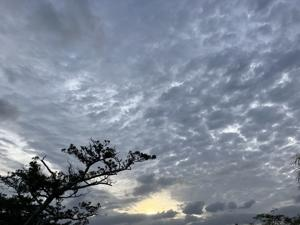

うるがいの話 ある日
最新: クラーの修理【うるがいの話 ある日】とは 一日だけのプログです
『うるがいの話』の最新一日だけのプログで、通信料が少なく経済的だ。カニの画像をクリックすると全ての日付が載る『うるがいの話』サイトを表示します
|
|
【うるがいの話】 うるがい(ｳﾙｶﾞｲ urugai)とは、『もずくがに』の名前でとても大きくなります。 |
|---|---|
|
|
【カミマヤーの話】 猫のことを方言でマヤーといいます。カミマヤー（kamimayaa）とは、神の猫のことです。 |
|
【たながぁの音楽】 たながぁ（ﾀﾅｶﾞｰ tanagaa）とは手長えびのことで、何種類かあり大きいのは車 エビぐらいになります。 |

|
【ぶながぁの話】 ぶながぁ(ﾌﾞﾅｶﾞｰ bunagaa)とは、赤い髪の毛、赤い身体、そして身長は１ｍ２０ｃｍ ぐらい、川の蟹を食べているの目撃された。場所は沖縄県国頭郡大宜味村のと ある村僕の隣近所に住んでいる爺さんから、聞いた話です。 |
|
|
【ギーマの話】 ギーマ(giima)とは、山原の里山に咲くスズランに似た、 花を付けます。実は食べられます、 気が付くと口の周りが紫になっています。 |
2024年11月19日 (火）クラーの修理
15:52

ゴタゴタが落ち着いてきたので、ためていたことをやる。気温も下がっ
たことだしと調子の悪いクラーを、修理することにした。購入した販売
店に電話をし、故障受付の電話番号を教えてもらう。そこで、メーカー
から折り返し連絡させますと言われ、連絡を待っていた。２０分以上も
経つがなかなか連絡がない！、スマホをみると電話の架電履歴がある。
お！、消音にしているので気が付かない。架電した電話番号に電話して
みる。自動音声案内である、ケッと思うながらも進める、そのうち私の
声を認識すると言われ、声で対応する、郵便番号を教えて下さいと言わ
れた、咄嗟に答えきれなく、間違った郵便番号を答えてしまった。切れ
た！！、もう一度、電話する、そして同じ手順を・・・・、なにかしら
販売店へ連絡してくださいと案内される。え！、販売店に電話し、状況
を説明、再度故障受付の電話番号にかけ、メーカーからの連絡電話を一
発で、取らなかったので苦労してますと言う。そして、メーカーから連
絡が有りますと言われ、緊張して電話を待つ。そして、１０分程して連
絡があり無事とれた。そして、明日の訪問時間をショートメールでお知
らせしますと電話を終える。朝、９時半頃ｓｍｓから、訪問時間を知ら
される、不都合だったら連絡してくださいとあった、特に問題がなにの
で、了解とｓｍｓに書き込んだが、『メッセージを送信できませんでし
た』とオオ、そうかい、ム。老人だと、これらの対応難しいっす。
ヨメが、葬儀社へ費用を銀行で振り込む。車で、待つこと３０分！！余
りにも遅いので、車を降り銀行へ行くことにした。と、ヨメがプンプン
起こっている。事前に教えられた金額を振込額にして、用紙を書く、そ
して現金振込しようとすると、身分証明書が必要といわれ、さらに葬儀
費用のうち、銀行の振込手数料は葬儀社が負担するので差し引いて下さ
いと葬儀社から言われたと話すと、先ほどの振込額から、手数料を引い
て下さいと用紙の記入からやり直し、そもそも、初めから銀行員に段取
りの手順を尋ねようとしたけど、そういう雰囲気で無かった。だから、
、、、、と怒っていた。
葬儀の費用だけど、ヨメがもっていたパンフレットの価格では３３万相
当だったが、それとはお布施や弁当代など、別に２０万近くの金額が必
要になった。ま、その他のもろもろで、だいたい７０万ほどかなと、香
典は人数が少ないので。
あ、クラーは３つほどの部品を交換するため修理は、来週となった。
本日のバタフライピーの花、６２収穫。全然、少なくならない
１５時４５分 ビットコインの総資産 ￥４１、０７９（↑４８１）
売却額 ￥３９、８６８